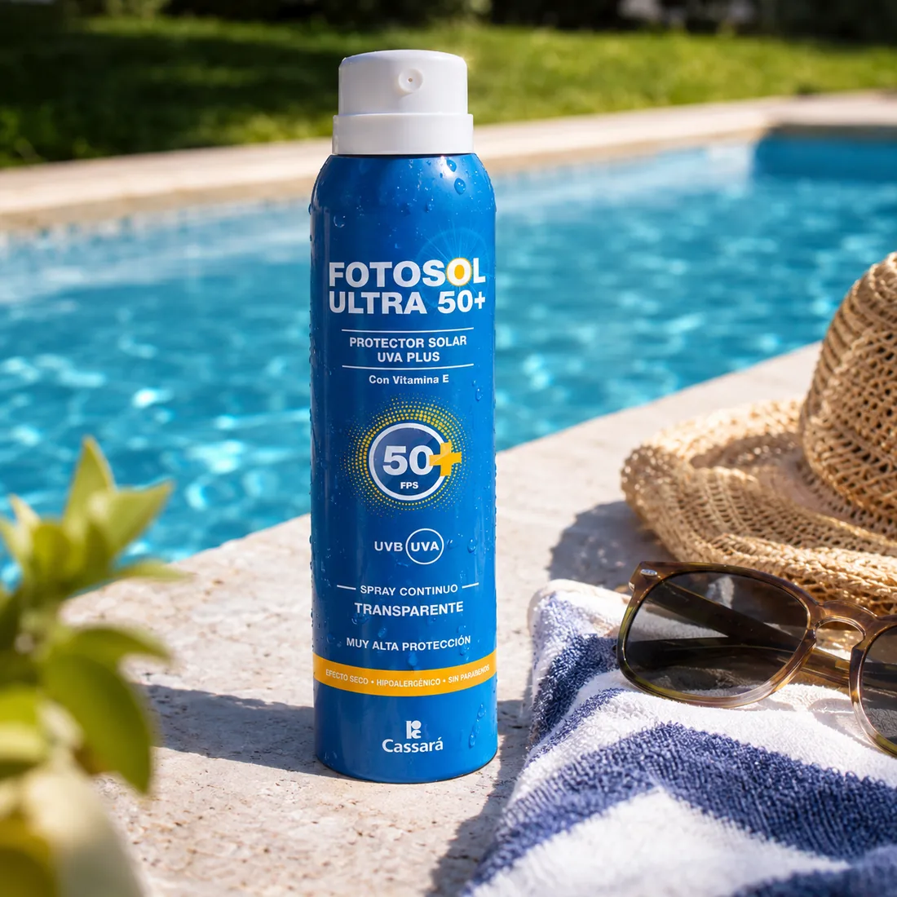

Pileta
FPS 50+
150 ml
Spray continuo transparente
El formato práctico de la línea: multiposición 360°, efecto seco y vitamina E.
- UVB y UVA plus
- Transparente, de efecto seco
- Hipoalergénico y sin parabenos
- No comedogénico y resistente al agua